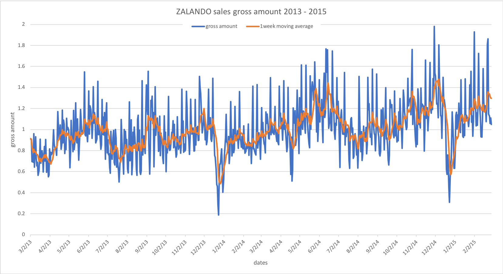

To increase MonetDB's ability to process time series data, We have extended MonetDB’s support for the SQL window functions to cover the majority as specified by the 2011 revision of the SQL standard.
In this showcase, we elaborate the functionality that has been added together with some example queries to show their usage.
In this section we give specifications of the new window functions.
Besides the existing RANK(), DENSE_RANK() and ROW_NUMBER() functions, we have implemented all the remaining analytic functions listed in the SQL standard:
PERCENT_RANK():DOUBLE - calculates the relative rank of the current row, i.e. (rank() - 1) / (rows in partition - 1).CUME_DIST():DOUBLE - calculates the cumulative distribution, i.e. the number of rows preceding or peer with current row / rows in partition.NTILE(nbuckets BIGINT):BIGINT - enumerates rows from 1 in each partition, dividing it in the most equal way possible.LAG(input A[, offset BIGINT[, default_value A ]]):A - returns input value at row offset before the current row in the partition. If the offset row does not exist, then the default_value is output. By default offset is 1 and default_value is NULL.LEAD(input A[, offset BIGINT[, default\_value A ]]):A - Returns input value at row offset after the current row in the partition. If the offset row does not exist, then the default_value is output. By default offset is 1 and default_value is NULL.FIRST_VALUE(input A):A - Returns input value at first row of the window frame.LAST_VALUE(input A):A - Returns input value at last row of the window frame.NTH_VALUE(input A, nth BIGINT):A - Returns input value at nth row of the window frame. If there is no nth row in the window frame, then NULL is returned.We have extended our existing aggregate functions to support aggregate window functions:
MIN(input A) : AMAX(input A) : ACOUNT(*) : BIGINTCOUNT(input A) : BIGINTSUM(input A) : APROD(input A) : AAVG(input A) : DOUBLEOur window functions now support frame specifications from the SQL standard.
The fully implemented SQL grammar is listed bellow:
window_function_call:
{ window_aggregate_function | window_rank_function } OVER { ident | `(' window_specification `)' }
window_aggregate_function:
AVG `(' query_expression `)'
| COUNT `(' { `*' | query_expression } `)'
| MAX `(' query_expression `)'
| MIN `(' query_expression `)'
| PROD `(' query_expression `)'
| SUM `(' query_expression `)'
window_rank_function:
CUME_DIST `(' `)'
| DENSE_RANK `(' `)'
| FIRST_VALUE `(' query_expression `)'
| LAG `(' query_expression [ `,' query_expression [ `,' query_expression ] ] `)'
| LAST_VALUE `(' query_expression `)'
| LEAD `(' query_expression [ `,' query_expression [ `,' query_expression ] ] `)'
| NTH_VALUE `(' query_expression `,' query_expression `)'
| NTILE `(' query_expression `)'
| PERCENT_RANK `(' `)'
| RANK `(' `)'
| ROW_NUMBER `(' `)'
window_specification:
[ ident ] [ PARTITION BY column_ref [ `,' ... ] ] [ ORDER BY sort_spec ]
[ { ROWS | RANGE | GROUPS } { window_frame_start | BETWEEN window_bound AND window_bound }
[ EXCLUDING { CURRENT ROW | GROUP | TIES | NO OTHERS } ] ]
window_bound:
UNBOUNDED FOLLOWING
| query_expression FOLLOWING
| UNBOUNDED PRECEDING
| query_expression PRECEDING
| CURRENT ROW
window_frame_start:
UNBOUNDED PRECEDING
| query_expression PRECEDING
| CURRENT ROW
The supported frames are: ROWS, RANGE and GROUPS.
ROWS - frames are calculated on physical offsets of input rows.RANGE - result frames are calculated on value differences from input rows (used with a custom PRECEDING or FOLLOWING bound requires an ORDER BY clause).GROUPS - groups of equal row values are used to calculate result frames (requires an ORDER BY clause).After a window frame declaration, the window bounds must be specified (the window function will be applied to each frame derived from each row in the input). If window_frame_start bound is provided, then the frame’s end will be set to CURRENT ROW. An UNBOUNDED PRECEDING bound means the first row of a partition, while an UNBOUNDED FOLLOWING means the last row of a partition. In query_expression PRECEDING (i.e. frame rows before the current row) and query_expression FOLLOWING (i.e. frame rows after the current row) bounds, the query_expression can evaluate to a single atom (use the same bound for every input row), or a column (use a different bound for each input row). In either case, every query_expression value must be non-negative and non-NULL, as negative and NULL bounds are not defined for SQL window functions. CURRENT ROW is equivalent to 0 PRECEDING and 0 FOLLOWING on either side of the bound. The SQL standard allows an EXCLUDING clause after the bounds definition. At the moment only EXCLUDE NO OTHERS (i.e. default one) is implemented, which means all rows in the window frame are used for computation of the analytic function. The frame specification has been implemented for aggregation functions, as well as the functions FIRST_VALUE, LAST_VALUE and NTH_VALUE. The default frame specification is RANGE BETWEEN UNBOUNDED PRECEDING AND CURRENT ROW when there is an ORDER BY clause, and RANGE BETWEEN UNBOUNDED PRECEDING AND UNBOUNDED FOLLOWING when an ORDER BY clause is not present.
In this section, we use several example SQL queries to show how to use some of the new window functions.
CREATE TABLE analytics (col1 int, col2 int);
INSERT INTO analytics VALUES
(15, 3), (3, 1), (2, 1), (5, 3), (NULL, 2),
( 3, 2), (4, 1), (6, 3), (8, 2), (NULL, 4);
SELECT PERCENT_RANK() OVER (ORDER BY col1) FROM analytics;
+--------------------+
| L4 |
+====================+
| 0 |
| 0 |
| 0.2222222222222222 |
| 0.3333333333333333 |
| 0.3333333333333333 |
| 0.5555555555555556 |
| 0.6666666666666666 |
| 0.7777777777777778 |
| 0.8888888888888888 |
| 1 |
+--------------------+
SELECT FIRST_VALUE(col1) OVER (PARTITION BY col2) FROM analytics;
+------+
| L4 |
+======+
| 3 |
| 3 |
| 3 |
| null |
| null |
| null |
| 15 |
| 15 |
| 15 |
| null |
+------+
SELECT COUNT(col1) OVER (ORDER BY col2 DESC RANGE UNBOUNDED PRECEDING) FROM analytics;
+------+
| L4 |
+======+
| 0 |
| 3 |
| 3 |
| 3 |
| 5 |
| 5 |
| 5 |
| 8 |
| 8 |
| 8 |
+------+
SELECT AVG(col1) OVER (ORDER BY col2 GROUPS BETWEEN UNBOUNDED PRECEDING AND CURRENT ROW)
FROM analytics;
+------+
| L4 |
+======+
| 3 |
| 3 |
| 3 |
| 4 |
| 4 |
| 4 |
| 5.75 |
| 5.75 |
| 5.75 |
| 5.75 |
+------+
We have also implemented interval boundaries for time columns on RANGE frames.
CREATE TABLE timetable (col1 timestamp, col2 int);
INSERT INTO timetable VALUES
('2017-01-01', 3), ('2017-02-02', 1), ('2017-03-03', 1), ('2017-04-04', 3),
(NULL, 2), ('2017-06-06', 2), ('2017-07-07', 1), ('2017-08-08', 3),
('2017-09-09', 2), (NULL, 4);
SELECT SUM(col2) OVER (ORDER BY col1 RANGE BETWEEN
INTERVAL '1' MONTH PRECEDING AND INTERVAL '3' MONTH FOLLOWING)
FROM timetable;
+------+
| L4 |
+======+
| 6 |
| 6 |
| 5 |
| 5 |
| 5 |
| 5 |
| 6 |
| 6 |
| 5 |
| 2 |
+------+
WINDOW Keyword.For convenience, we have added support for the WINDOW keyword. If the same window specification is to be used multiple times in a SELECT clause, one can define an alias for this window specification, so as to avoid repeating the same window definition. Such aliases can be defined using the new WINDOW keyword in a FROM clause. In the query below, the definitions of the aliases w1 and w2 show how different aliases can be defined for different window specifications on one table. The definition of the alias w3 shows that different aliases can be defined for the same window specification. Finally, all aliases can be subsequently used in the SELECT clause.
SELECT COUNT(*) OVER w1, PROD(col1) OVER w2, SUM(col1) OVER w1,
AVG(col2) OVER w2, MAX(col2) OVER w3
FROM analytics WINDOW
w1 AS (ROWS BETWEEN 5 PRECEDING AND 0 FOLLOWING),
w2 AS (RANGE BETWEEN CURRENT ROW AND UNBOUNDED FOLLOWING),
w3 AS (w2);
+------+--------+------+--------------------------+------+
| L4 | L10 | L14 | L20 | L24 |
+======+========+======+==========================+======+
| 1 | 259200 | 15 | 2.2 | 4 |
| 2 | 259200 | 18 | 2.2 | 4 |
| 3 | 259200 | 20 | 2.2 | 4 |
| 4 | 259200 | 25 | 2.2 | 4 |
| 5 | 259200 | 25 | 2.2 | 4 |
| 6 | 259200 | 28 | 2.2 | 4 |
| 6 | 259200 | 17 | 2.2 | 4 |
| 6 | 259200 | 20 | 2.2 | 4 |
| 6 | 259200 | 26 | 2.2 | 4 |
| 6 | 259200 | 21 | 2.2 | 4 |
+------+--------+------+--------------------------+------+
Our previous partitioning implementation did not impose order in the input. With the new implementation of window functions, partitioning now imposes ascending order by default, thus pairing with the industry standard implementation. If the same expression occurs in both PARTITION and ORDER clause, then ORDER defines the input order:
CREATE TABLE ranktest (id INT, k STRING);
INSERT INTO ranktest VALUES (1061,'a'),(1062,'b'),(1062,'c'),(1061,'d');
SELECT ROW_NUMBER() OVER (PARTITION BY id), id FROM ranktest;
-- Output before
+------+------+
| L4 | id |
+======+======+
| 1 | 1062 |
| 2 | 1062 |
| 1 | 1061 |
| 2 | 1061 |
+------+------+
-- Output now
+------+------+
| L4 | id |
+======+======+
| 1 | 1061 |
| 2 | 1061 |
| 1 | 1062 |
| 2 | 1062 |
+------+------+
Moving average is an important calculation in statistics. For example, it is often used in technical analysis of sales data. With the SQL 2011 window functions, it is now much easier to computing statistic methods like moving averages that explicitly address the values by their position in SQL (the relational model does not have the notion of order, so table records can only be addressed by their combined distinct values. If two records happen to contain exactly the same values, there is no way to distinguish them). In this example, we show how to compute moving average for some Zalando sales data. First, we load the data set, which contains among others a gross_amount for each day:
sql>CREATE TABLE region1_orders (
more> region INT DEFAULT 1,
more> id INT,
more> no_items FLOAT,
more> no_orders FLOAT,
more> gross_amount FLOAT,
more> "date" DATE
more>);
operation successful
sql>COPY OFFSET 2 INTO
more> region1_orders
more> FROM '/ZALANDO_data_M3/region1_orders.csv'
more> (id, no_items, no_orders, gross_amount, "date")
more> DELIMITERS ',','\n' NULL AS '' BEST EFFORT;
729 affected rows
The query below computes moving averages of 7 preceding days for the gross_amount.
sql>SELECT "date", gross_amount, AVG(gross_amount) OVER (ORDER BY "date" ASC
more> RANGE BETWEEN INTERVAL '7' DAY PRECEDING AND INTERVAL '0' DAY FOLLOWING) AS ma1week
more> FROM region1_orders;
+------------+--------------------------+--------------------------+
| date | gross_amount | ma1week |
+============+==========================+==========================+
| 2013-03-02 | 0.913448169706 | 0.913448169706 |
| 2013-03-03 | 0.900760559146 | 0.907104364426 |
| 2013-03-04 | 0.696187810056 | 0.8367988463026667 |
| 2013-03-05 | 0.711312403182 | 0.8054272355225 |
...
| 2015-02-24 | 1.1476541021 | 1.34353897110375 |
| 2015-02-25 | 1.12662334926 | 1.33628887056875 |
| 2015-02-26 | 1.05794838226 | 1.3152827855675 |
| 2015-02-27 | 1.11077032663 | 1.3009447468287498 |
| 2015-02-28 | 1.04995952798 | 1.2978170778875 |
+------------+--------------------------+--------------------------+
729 tuples
The complete result set is best view in a plot as shown in the following figure:
